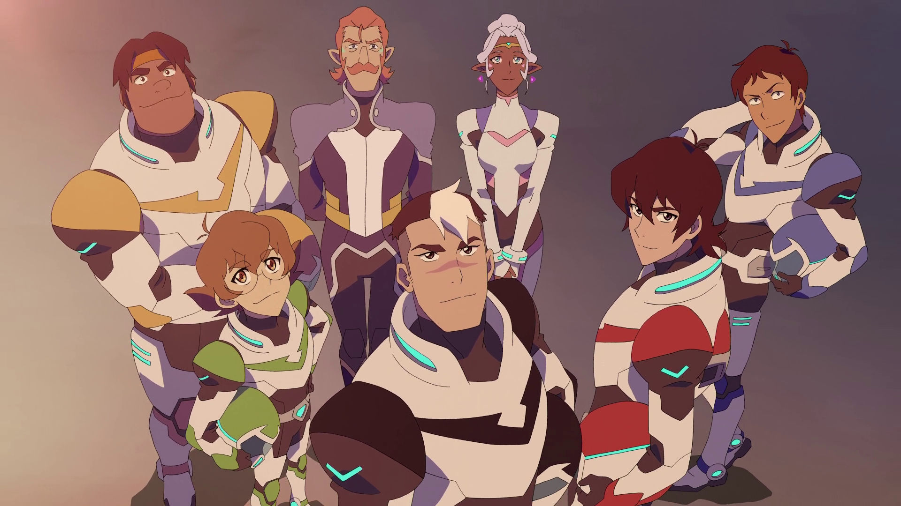

The Story So Far...
Voltron: Legendary Defender is an American animated mecha web television series produced by American companies DreamWorks Animation Television and World Events Productions and animated by South Korean Studio Mir. It is a reboot of the Voltron franchise and Japanese anime series Beast King GoLion, and its animation is a mix of anime-influenced traditional animation for characters and background and CGI for Voltron action sequences. Voltron: Legendary Defender is set in a science fiction universe where planetary energy called "quintessence" can be used to power vehicles and magic. The series follows the adventures of the Paladins of Voltron who must learn to work together to form the giant robot Voltron and use it to defeat the evil Galra Empire.
- Genre: Mecha Science fantasy, Action, Adventure, Comedy, Drama
- Voice Actors: Josh Keaton Steven Yeun, Jeremy Shada, Bex Taylor-Klaus, Tyler Labine, Kimberly Brooks, Rhys Darby, Neil Kaplan, Cree Summer, A.J. Locascio
- No. Seasons: 8
- Production Companies: DreamWorks Animation Television, World Events Productions Studio Mir